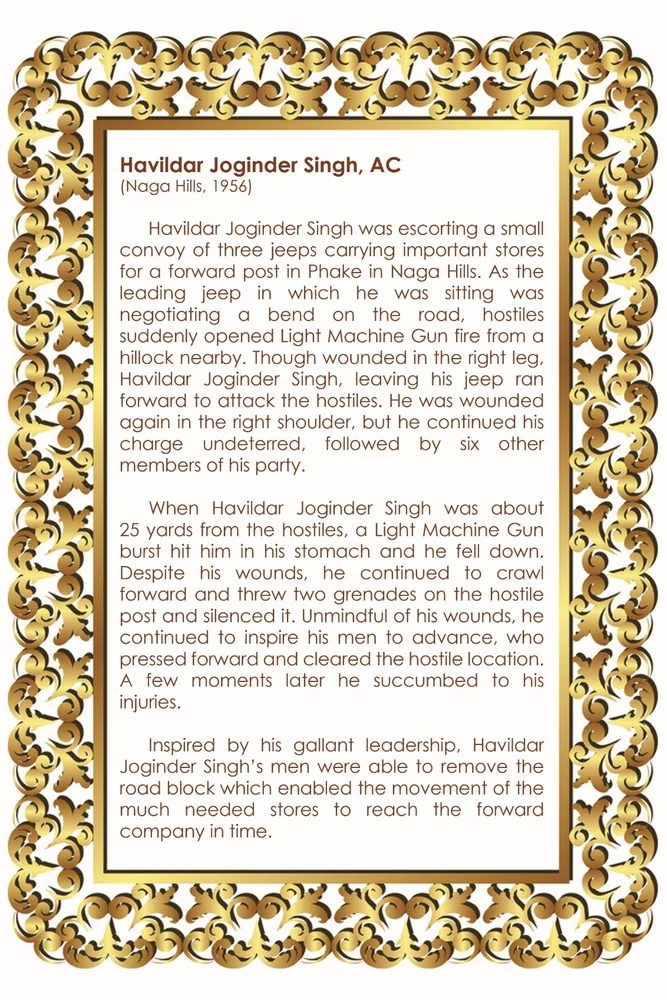

ਹਵੀਲਦਾਰ ਜੋਗਿੰਦਰ ਸਿੰਘ, ਏਸੀ
ਸਿਰਲੇਖ: Havildar Joginder Singh, AC
ਸ਼੍ਰੇਣੀ: ਹਾਲ ਆਫ਼ ਫ਼ੇਮ
Award: ਅਸ਼ੋਕ ਚੱਕਰ
Era / Action: Naga Hills, 1956
ਹਵੀਲਦਾਰ ਜੋਗਿੰਦਰ ਸਿੰਘ, ਏਸੀ
ਹਵਾਲਾ (ਲਿਖਤ):
(ਨਾਗਾ ਹਿਲਜ਼, 1956) ਹੌਲਦਾਰ ਜੋਗਿੰਦਰ ਸਿੰਘ ਤਿੰਨ ਜੀਪਾਂ ਦੇ ਇੱਕ ਛੋਟੇ ਕਾਫਲੇ ਨੂੰ ਨਾਗਾ ਹਿਲਜ਼ ਵਿੱਚ ਫੇਕ ਵਿੱਚ ਇੱਕ ਅੱਗੇ ਦੀ ਚੌਕੀ ਲਈ ਮਹੱਤਵਪੂਰਨ ਸਟੋਰਾਂ ਨੂੰ ਲੈ ਕੇ ਜਾ ਰਿਹਾ ਸੀ। ਜਦੋਂ ਉਹ ਮੋਹਰੀ ਜੀਪ ਜਿਸ ਵਿੱਚ ਉਹ ਬੈਠਾ ਸੀ, ਸੜਕ ਦੇ ਇੱਕ ਮੋੜ 'ਤੇ ਗੱਲਬਾਤ ਕਰ ਰਿਹਾ ਸੀ, ਦੁਸ਼ਮਣਾਂ ਨੇ ਅਚਾਨਕ ਨੇੜੇ ਦੀ ਇੱਕ ਪਹਾੜੀ ਤੋਂ ਲਾਈਟ ਮਸ਼ੀਨ ਗੰਨ ਨਾਲ ਗੋਲੀ ਚਲਾ ਦਿੱਤੀ। ਸੱਜੀ ਲੱਤ 'ਚ ਸੱਟ ਲੱਗਣ ਦੇ ਬਾਵਜੂਦ ਹੌਲਦਾਰ ਜੋਗਿੰਦਰ ਸਿੰਘ ਆਪਣੀ ਜੀਪ ਛੱਡ ਕੇ ਦੁਸ਼ਮਣਾਂ 'ਤੇ ਹਮਲਾ ਕਰਨ ਲਈ ਅੱਗੇ ਭੱਜਿਆ। ਉਸ ਦੇ ਸੱਜੇ ਮੋਢੇ ਵਿਚ ਦੁਬਾਰਾ ਸੱਟ ਲੱਗ ਗਈ, ਪਰ ਉਸ ਨੇ ਬਿਨਾਂ ਕਿਸੇ ਰੁਕਾਵਟ ਦੇ ਆਪਣਾ ਦੋਸ਼ ਜਾਰੀ ਰੱਖਿਆ, ਉਸ ਤੋਂ ਬਾਅਦ ਉਸ ਦੀ ਪਾਰਟੀ ਦੇ ਛੇ ਹੋਰ ਮੈਂਬਰ। ਜਦੋਂ ਹੌਲਦਾਰ ਜੋਗਿੰਦਰ ਸਿੰਘ ਦੁਸ਼ਮਣਾਂ ਤੋਂ ਕਰੀਬ 25 ਗਜ਼ ਦੀ ਦੂਰੀ 'ਤੇ ਸੀ ਤਾਂ ਇਕ ਲਾਈਟ ਮਸ਼ੀਨ ਗੰਨ ਦਾ ਫੱਟਾ ਉਸ ਦੇ ਪੇਟ ਵਿਚ ਵੱਜਿਆ ਅਤੇ ਉਹ ਹੇਠਾਂ ਡਿੱਗ ਗਿਆ। ਆਪਣੇ ਜ਼ਖਮਾਂ ਦੇ ਬਾਵਜੂਦ, ਉਹ ਅੱਗੇ ਵਧਦਾ ਰਿਹਾ ਅਤੇ ਦੁਸ਼ਮਣ ਪੋਸਟ 'ਤੇ ਦੋ ਗ੍ਰਨੇਡ ਸੁੱਟੇ ਅਤੇ ਇਸਨੂੰ ਚੁੱਪ ਕਰ ਦਿੱਤਾ। ਆਪਣੇ ਜ਼ਖ਼ਮਾਂ ਤੋਂ ਅਣਜਾਣ, ਉਹ ਆਪਣੇ ਬੰਦਿਆਂ ਨੂੰ ਅੱਗੇ ਵਧਣ ਲਈ ਪ੍ਰੇਰਿਤ ਕਰਦਾ ਰਿਹਾ, ਜਿਨ੍ਹਾਂ ਨੇ ਅੱਗੇ ਵਧ ਕੇ ਦੁਸ਼ਮਣੀ ਵਾਲੀ ਥਾਂ ਨੂੰ ਸਾਫ਼ ਕਰ ਦਿੱਤਾ। ਕੁਝ ਹੀ ਪਲਾਂ ਬਾਅਦ ਉਸ ਨੇ ਜ਼ਖ਼ਮਾਂ ਦੀ ਤਾਬ ਨਾ ਝੱਲਦੇ ਹੋਏ ਦਮ ਤੋੜ ਦਿੱਤਾ। ਉਸ ਦੀ ਬਹਾਦਰੀ ਦੀ ਅਗਵਾਈ ਤੋਂ ਪ੍ਰੇਰਿਤ ਹੋ ਕੇ, ਹੌਲਦਾਰ ਜੋਗਿੰਦਰ ਸਿੰਘ ਦੇ ਜਵਾਨ ਸੜਕ ਦੇ ਰੁਕਾਵਟ ਨੂੰ ਹਟਾਉਣ ਦੇ ਯੋਗ ਹੋ ਗਏ, ਜਿਸ ਨਾਲ ਬਹੁਤ ਜ਼ਰੂਰੀ ਸਟੋਰਾਂ ਦੀ ਆਵਾਜਾਈ ਸਮੇਂ ਸਿਰ ਅੱਗੇ ਕੰਪਨੀ ਤੱਕ ਪਹੁੰਚਣ ਦੇ ਯੋਗ ਹੋ ਗਈ।
ORIGINAL CITATION CARD

* Double-click either image above to view in fullscreen
🇬🇧 English
🇮🇳 हिन्दी
ੴ ਪੰਜਾਬੀ
ਮੋਬਾਈਲ 'ਤੇ ਖੋਲ੍ਹੋ
ਆਪਣੇ ਫ਼ੋਨ 'ਤੇ ਅੰਗਰੇਜ਼ੀ, ਹਿੰਦੀ ਜਾਂ ਪੰਜਾਬੀ ਵਿੱਚ ਦੇਖਣ ਲਈ ਇਸ QR ਕੋਡ ਨੂੰ ਸਕੈਨ ਕਰੋ।